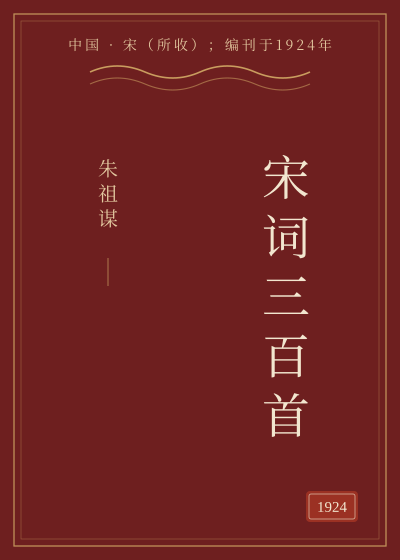
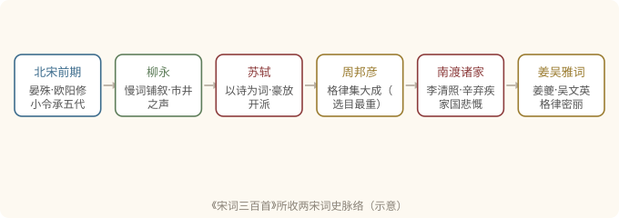

宋词三百首
一、基本信息
| 作者 | 朱祖谋（号上彊村民，'晚清四大词人'之一）编 |
|---|---|
| 成书/出版 | 民国十三年（1924）初刻刊行（况周颐作序） 宋词三百首（民国十三年刊本）— 书格（据香港中文大学图书馆藏本）（古籍数字图书馆） |
| 国别/地区 | 中国 |
| 时代 | 古代 · 宋（所收）；编刊于1924年 |
| 体裁 | 词选集 |
| 语言 | 汉语（文言词体） |

二、创作背景
编者朱祖谋（1857—1931），一名孝臧，号彊村/上彊村民，浙江归安（今湖州）人，'晚清四大词人'之一，曾刻《彊村丛书》汇集唐宋金元词集（书格页面所载）。1924年他寓居苏州时辑成此选，书名页题'上彊邨民编'，吴昌硕篆书题端，况周颐作序（书格页面，据香港中文大学图书馆藏民国十三年刊本）。
三次修订的选目变化（书格页面）：初编收87家300首；重编本增11首（辛弃疾、吴文英各增2首）而删20家28首，余81家283首；第三稿再增林逋、柳永各1首，定为82人285首。今通行本多以初编或重编为底本（不同版本篇数不同，本页从书格描述）。
选词倾向受浙西、常州两词派影响，重格律与'浑成'：吴文英24首、周邦彦22首入选最多，而苏轼仅12首、辛弃疾10首、李清照7首（书格页面所列数字）——'为来学周行之示'的选词宗旨使它更近词学门径而非大众趣味（WebSearch 摘要引语，转述待核）。
三、内容脉络
全书不分卷，按词人时代先后编排（书格影印本的版式所见）。所选自北宋开国的晏殊、欧阳修，至南渡后的辛弃疾、姜夔、吴文英，兼收唐五代（李煜、冯延巳）与无名氏作品（篇目归属依各版本，列举待核）。
名篇如李煜《虞美人》（'问君能有几多愁'）、柳永《雨霖铃》（'杨柳岸，晓风残月'）、苏轼《水调歌头》（'明月几时有'）、秦观《鹊桥仙》、周邦彦《兰陵王·柳》、李清照《声声慢》（'寻寻觅觅'）、辛弃疾《摸鱼儿》（'更能消几番风雨'）、姜夔《扬州慢》、吴文英《莺啼序》皆在其中（名篇列举依通行记忆，逐首待核）。
作为一部'以词史眼光编成'的选本，它强调词体的律度与雅化一系（梦窗、清真），与龙榆生《唐宋名家词选》等更重豪放/白话趣味的选本构成互补。
四、主要人物表
| 人物 | 身份 | 说明 |
|---|---|---|
| （无特定主人公） | 选集 | 81—87位词人各以名作出现 |
五、主题与艺术特点
- 词体的雅化与格律：重清真（周邦彦）、梦窗（吴文英）一路，讲音律精严、章法细密，代表晚清词学的审美判断。
- 两宋词史的缩影：从晏欧的小令、柳永的慢词铺叙、苏轼的以诗为词，到周邦彦的集大成、南渡词人的家国之悲、姜夔吴文英的格律雅词，暗含一部'词史'（侯雅文论文论其建构'宋词史'，转述待核）。
- 私人与家国：伤春悲秋的闺情与故国之思并存，是宋词情感世界的两个基本极。
- 晚清词学的投影：选目即批评，朱祖谋的词学观（尊梦窗、重体格）通过此书影响此后的词学教育与审美。
六、影响与评论
- 书格（据港中大意藏民国刻本）：1924年初刻，况周颐作序、吴昌硕题签；此后多次增删重订，成为学词者最通行的入门选本之一。
宋词三百首（民国十三年刊本）— 书格（据香港中文大学图书馆藏本）（古籍数字图书馆） - Britannica 中国文学条目称词（ci）为配合音乐曲调的长短句诗体，宋代为其黄金时代；本选正是这一文体的标准选本（该条目对词体的定位见 Britannica 中文学总论）。
Chinese literature — Encyclopaedia Britannica（百科全书） - 选目倾向（吴文英24首居首、李清照仅7首）本身成为词学批评的讨论对象，反映了晚清常州词派'尊体'与重格律的立场（书格页面所列数字）。
宋词三百首（民国十三年刊本）— 书格（据香港中文大学图书馆藏本）（古籍数字图书馆） - 唐圭璋《宋词三百首笺注》（通行说法）使此选进入现代学术流通——本条为通说，笺注初版年份待核。
宋词三百首（民国十三年刊本）— 书格（据香港中文大学图书馆藏本）（古籍数字图书馆）
七、阅读建议
- 词体长短句的节奏（领字、句逗）与近体诗不同，需要出声吟诵才能体会。
- 选目重格律雅化一系，吴文英词尤其密丽难解，初读者易却步——可先绕开梦窗。
- 版本异文多（各本选目不同），引用时须注明所用底本。
- 上彊村民编、唐圭璋笺注《宋词三百首笺注》（上海古籍出版社/人民文学出版社版）：通行学术本。
- 朱祖谋编、蔡义江（另说李华？）解析本（复旦大学出版社《宋词三百首全解》，2008）：今译+赏析，入门友好。
- 进阶：夏承焘《唐宋词鉴赏辞典》与龙榆生《唐宋名家词选》可补豪放一路。
先读李煜、柳永、苏轼、李清照等名篇建立体感 → 再入周邦彦、姜夔体会格律章法 → 最后攻吴文英（可配合词律知识）。背诵以小令为佳。
八、待核实
- 选目篇数三稿异动（300/283/285）各本不同，本页从书格描述，通行排印本篇数以所用版本目录为准。
- 唐圭璋笺注本初版年份（1934年？）待核。
- 况周颐序文内容与'为来学周行之示'等选词宗旨表述的原始出处待核。
- 名篇列举（'明月几时有'等是否在册）依通行记忆，未逐首核对。